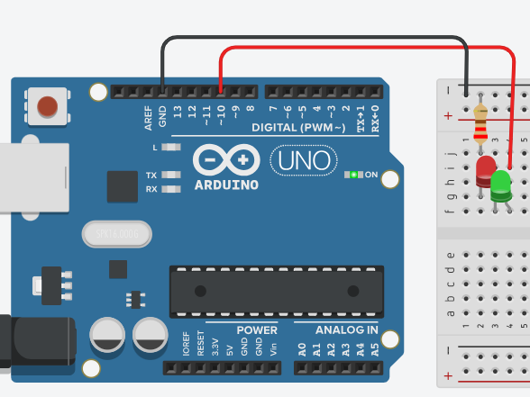
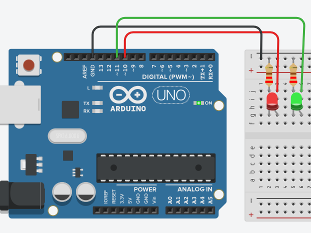

Circuitos eléctricos con Arduino
La electricidad es el flujo de carga eléctrica, generalmente electrones, a través de un material conductor. Los circuitos eléctricos en Arduino son rutas cerradas que permiten el flujo de corriente desde una fuente de energía, atravesando unos componentes y regresando a la fuente, creando una trayectoria completa para el flujo de electrones.
En S4A los componentes básicos de un circuito son:
- Fuente de energía: la placa se conecta mediante el cable USB a una computadora.
- Conductores: Los cables conectan los componentes del circuito, permitiendo el flujo de electrones.
- Componentes: Dispositivos como LEDs, motores, sensores, etc., que realizan una función específica dentro del circuito.
- Resistencias: Componentes que limitan el flujo de corriente, protegiendo los componentes sensibles de daños.
¿Cómo funciona? La fuente de energía proporciona una tensión eléctrica (voltaje). Esta tensión hace que los electrones fluyan desde el polo positivo de la fuente, a través de los conductores, hacia los componentes conectados. Los electrones atraviesan los componentes, realizando su función (por ejemplo, iluminando un LED, haciendo girar un motor). Los electrones regresan a la fuente a través de otro conductor, completando el circuito. Si el circuito se interrumpe (circuito abierto), el flujo de electrones se detiene y el componente no funciona.
En Arduino, los circuitos eléctricos se pueden clasificar en dos tipos principales:
- Circuitos en Serie:
- Los componentes están conectados uno tras otro, formando un único camino para el flujo de corriente.
- Si un componente falla, todo el circuito se interrumpe.
- La corriente es la misma en todos los puntos del circuito, mientras que el voltaje se divide entre los componentes.
- Ejemplo: 
- Circuitos en Paralelo:
- Los componentes están conectados de manera que tienen la misma tensión entre sus extremos, pero la corriente se divide entre ellos.
- Si un componente falla, los demás siguen funcionando normalmente.
- La corriente total es la suma de las corrientes que pasan por cada componente, mientras que el voltaje es el mismo para todos.
- Ejemplo: 
Ejercicio 2: Semáforo peatonal
Programar en S4A un semáforo peatonal utilizando los pines digital 10 para el LED rojo y el digital 11 para el LED verde. En el escenario, utiliza disfraces descargados desde el navegador, para representar el estado de cada LED.
Actividad:
Dentro de la carpeta S4A, crear un documento de Google con las respuestas a las siguientes consignas:
- ¿Qué es la electricidad?
- ¿Qué es la corriente?
- ¿Qué es la tensión?
- ¿Qué es la resistencia?
- ¿Qué es un cortocircuito?
Recuerda colocar en el encabezado del documento Curso e integrantes; también colocar las fuentes de consulta al final. Fecha limite de entrega: primera semana de septiembre.
Importante: Este trabajo será considerado en la evaluación individual de la segunda semana de septiembre.